에너지관리기사 (2003-08-31 기출문제)
1과목: 연소공학
1. 액체연료가 증발하고 확산에 의해서 공기와 혼합되어 불꽃 연소하는 것을 ( )라 한다. ( )안에 알맞는 것은?
- 혼합기연소
- 증발연소
- 표면연소
- 분해연소
(정답률: 65%)

2. 고체연료의 공업분석에서 고정탄소를 산출하는 식은?
- 고정탄소(%) = 100 - [수분(%)+회분(%)+황분(%)]
- 고정탄소(%) = 100 - [수분(%)+회분(%)+질소(%)]
- 고정탄소(%) = 100 - [수분(%)+회분(%)+휘발분(%)]
- 고정탄소(%) = 100 - [수분(%)+황분(%)+휘발분(%)]
(정답률: 80%)
3. 일산화탄소 1Nm3을 연소시키는데 필요한 공기량(Nm3)은?
- 1/0.232
- 1/0.232×1/2
- 1/0.21
- 1/0.21×1/2
(정답률: 60%)
4. 다음 연료중 발열량(kcal/㎏)이 가장 큰 것은?
- 중유
- 프로판
- 석탄
- 코크스
(정답률: 73%)
5. 중유의 저위발열량이 10000㎉/㎏인 원료 1㎏을 연소시킨 결과 연소열이 7500㎉/㎏이고, 유효 출열이 7230㎉/㎏이었다면 전열효율과 연소효율을 구한 값은?
- 전열효율 : 75%, 연소효율 : 96.4%
- 전열효율 : 96.4%, 연소효율 : 75%
- 전열효율 : 72.3%, 연소효율 : 75%
- 전열효율 : 72.3%, 연소효율 : 96.4%
(정답률: 54%)
6. 경유의 탄소함량이 80%일 때, 이것 1㎏을 완전 연소시켰을 때 건가스중에 CO2가 15%였다면 건연소가스량은?
- 9.96Nm3/㎏
- 7.48Nm3/㎏
- 11.93Nm3/㎏
- 6.67Nm3/㎏
(정답률: 20%)
7. 보일러에 공급되는 연료의 조성과 중량비가 아래와 같을 때 150%의 공기과잉율로 연소시킨다면 연료 1㎏당 공급되는 공기량은? [ C : 78%, H2 : 6%, O2 : 9%, ash : 7% ]
- 16.67㎏/㎏연료
- 14.73㎏/㎏연료
- 11.56㎏/㎏연료
- 15.95㎏/㎏연료
(정답률: 알수없음)
8. 연료가 연소실에서 연소하여 그 가스가 1400℃에서 가열실로 들어가고 가열실을 나오는 온도가 600℃였다. 이 때 가열실의 열효율은? (단, 가열실로부터의 방산열은 연소실에서 생성된 열의 20%에 상당한다고 한다.)
- 42.9%
- 34.3%
- 57.1%
- 45.7%
(정답률: 0%)
9. 1차, 2차 연소중 2차 연소란 어떤 것을 말하는가?
- 공기보다 먼저 연료를 공급했을 경우 1차, 2차 반응에 의해서 연소하는 것
- 불완전 연소에 의해 발생한 미연가스가 연도 내에서 다시 연소하는 것
- 완전 연소에 의한 연소가스가 2차 공기에 의해서 폭발되는 현상
- 점화할 때 착화가 늦었을 경우 재점화에 의해서 연소 하는 것
(정답률: 92%)
10. 기체연료가 완전연소할 경우 배가스의 분석결과에 따르면(CO2)가 생성된다. 이 때 (CO2max)를 옳게 나타낸 식은?
- 21 (O2)/(CO2) - 21
- 21 (CO2)/21 - (O2)
- 21 (O2)/21 - (CO2)
- 21 (CO2)/(O2) - 21
(정답률: 79%)
11. 대기오염 방지를 위한 집진장치중 습식집진장치에 속하지 않는 것은?
- 백필터
- 사이크론 스크러버
- 벤추리 스크러버
- 충전탑
(정답률: 59%)
12. 액체연료 중 고온건류하여 얻은 타르계 중유의 특징이 아닌 것은?
- 화염의 방사율이 크다.
- 황의 영향이 적다.
- 슬러지를 발생시킨다.
- 단위 용적당의 발열량이 극히 적다.
(정답률: 69%)
13. 연소자동제어에서 점화전에 연소실가스를 몰아내는 환기를 무엇이라 하는가?
- 프리퍼지(prepurge)
- 로터리킬른(rotary kiln)
- 벤튜리스크라버(ventri scrubber)
- 멀티클론(multiclone)
(정답률: 95%)
14. 기체연료의 연소가 다른 연료들보다 과잉공기가 적게 드는 가장 큰 이유는?
- 확산으로 혼합이 용이하다.
- 열전도도가 크다.
- 착화온도가 낮다.
- 착화가 용이하다.
(정답률: 77%)
15. 다음 중 고체연료의 단점이 아닌 것은?
- 회분이 많고 발열량이 적다.
- 연소효율이 낮고 고온을 얻기 어렵다.
- 점화 및 소화가 곤란하고 온도조절이 곤란하다.
- 설비비 및 인건비가 적게 든다.
(정답률: 73%)
16. 공기비(m)에 대한 식으로 맞는 것은?
- m = 실제공기량/이론공기량
- m = 이론공기량/실제공기량
- m = 과잉공기량/이론공기량
- m = 실제공기량/과잉공기량
(정답률: 95%)
17. 등유, 경유 등의 휘발성이 큰 연료를 접시모양의 용기에 넣어 증발 연소시키는 방식은?
- 분해연소
- 확산연소
- 분무연소
- 포트식연소
(정답률: 83%)
18. 천연가스(주성분 : CH4)의 연소반응식은 CH4 + 2O2 → CO2 + 2H2O이다. 이 천연가스를 이론공기량으로 연소시켰을 때 의 이론 연소가스량으로 옳은 것은? (단, 공기중의 산소농도는 21%이며, 또한 물은 수증기 상태라고 한다.)
- 3.0Nm3/Nm3 CH4
- 10.5Nm3/Nm3 CH4
- 5.0Nm3/Nm3 CH4
- 12.5Nm3/Nm3 CH4
(정답률: 47%)
19. 연소용 공기의 공급방식으로는 자연통풍방식과 강제통풍 방식이 있으며, 강제통풍방식은 송풍기에 의해 공급된다. 송풍기의 풍량 조절방법이 아닌 것은?
- Speed Control
- Damper Control
- Vane Control
- Governor Control
(정답률: 28%)
20. 로 또는 보일러에 사용하는 연소용 중유의 성질을 조사한것중 틀린 것은?
- 비중 : 일반적으로 큰 것
- 점도 : 사용지역에 적합한 것을 선택
- 인화점 : 낮은 것은 화재의 위험성이 있으므로 예열 온도보다 5℃정도 높은 것
- 잔류 탄소 : 많은 것을 택할 것
(정답률: 69%)
2과목: 열역학
21. 다음 중 물의 증발잠열에 관한 사항은?
- 포화압력이 낮으면 증가한다.
- 포화압력이 높으면 증가한다.
- 포화온도가 높으면 증가한다.
- 온도와 압력에 무관하다.
(정답률: 50%)
22. 열효율이 25[%]인 증기 사이클에서 참일이 5[kWh/kJ]이면 1[kWh]의 일을 얻기 위하여 증기량은 몇 [㎏/kWh]인가?
- 20
- 120
- 920
- 720
(정답률: 8%)
23. 잘 보온된 10㎏/cm2의 포화수를 9㎏/cm2로 감압할 때 1ton의 포화수에서 발생하는 증기량은? (단, 절대압 10㎏/cm2인 포화수와 건포화증기의 엔탈피는 각각 181.19㎉/㎏, 663.2㎉/㎏이고, 9㎏/cm2 때의 포화수 및 건포화증기의 엔탈피는 각각 176.45㎉/㎏, 662.2㎉/㎏이다.)
- 6.99㎏
- 7.98㎏
- 8.07㎏
- 9.75㎏
(정답률: 7%)
24. 열펌프(heat pump)사이클에 대한 성능계수(COP)는 다음 중 어느 것을 해준 일(work input)로 나누어 준 것인가?
- 저온 쪽에 전달된 열량
- 저온 쪽에서 흡수한 열량
- 고온 쪽에서 전달된 열량
- 고온 쪽에서 흡수한 열량
(정답률: 50%)
25. 다음 설명 중 옳지 않은 것은?
- 이상기체의 등온가역 과정에서는 PV = 일정 이다.
- 이상기체의 경우 Cp-Cv = AR 이다.
- 이상기체의 단열가역 과정에서는 PV = 일정 이다.
- 이상기체의 열역학적 정의는
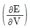
이고, PV = nRT의 식을 만족하는 기체이다.
(정답률: 34%)
26. 냉동기의 증기 압축장치에 쓸 수 있는 냉동제가 갖추어야 할 특성이 아닌 것은?
- 응축기 내부의 증기압이 과중하면 안된다.
- 증발기 내부의 증기압은 대기압 이하이어야 한다.
- 증발잠열은 크고 액체의 열용량은 적어야 한다.
- 임계압력은 최고 조작압력보다도 더 높아야 한다.
(정답률: 43%)
27. 다음 중 온도의 증가함수로 표현되지 않는 것은?
- 증발열
- 내부에너지
- 엔탈피
- 엔트로피
(정답률: 34%)
28. 냉장고가 저온체에서 300㎉/h의 비율로 열을 흡수하여 고온체에서 400㎉/h의 비율로 열을 방출한다. 이 냉장고의 성능계수는?
- 4.0
- 3.0
- 2.0
- 5.0
(정답률: 77%)
29. 발전소 보일러실에서 소비되는 석탄의 양이 6시간 동안 20톤이라고 한다. 석탄 1㎏의 연소에 의한 열량은 7000㎉이다. 석탄에서 얻을 수 있는 열의 20%가 전기에너지로 변한다고 하면 이 발전소에서 발전되는 전력은?
- 5426㎾
- 10862㎾
- 23220㎾
- 32560㎾
(정답률: 47%)
30. 그림의 PV선도에서 A → C의 등압과정중 계는 50J의 일을 받아들이고 25J의 열을 방출하며, C → B의 등적과정 중 75J의 열을 받아들인다면, B → A의 과정이 단열일 때 얼마의 일(J)을 방출하겠는가?
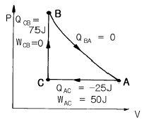
- 25J
- 50J
- 75J
- 100J
(정답률: 74%)
31. 다음 중 아래 압력의 포화수를 가열하여 동일 압력의 건포화증기로 만드는데 소요되는 증발열이 가장 큰 것은?
- 0.5kgf/cm2
- 1.0kgf/cm2
- 10kgf/cm2
- 100kgf/cm2
(정답률: 77%)
32. 온도가 800K이고 질량이 10㎏인 구리를 단열된 용기내에 담겨 있는 온도 290K인 100㎏의 물속에 넣었을 때 이 계전체의 엔트로피 변화는? (단, 구리와 물의 열용량은 각각 0.398kJ/㎏.K, 4.185kJ/㎏.K이다.)
- -3.973kJ/K
- 2.897kJ/K
- 4.424kJ/K
- 6.870kJ/K
(정답률: 59%)
33. 대기압 하에서 1몰의 CO2를 0℃에서 1000℃까지 가열하였을 때 엔트로피 변화는? (단, CO2의 Cp = 6.85+0.008533T-2.475x10-6T2이다.)
- 17.17 ㎈/deg.mol
- 21.25 ㎈/deg.mol
- 25.17 ㎈/deg.mol
- 29.25 ㎈/deg.mol
(정답률: 19%)
34. 97℃로 유지되고 있는 항온조가 실내 온도 27℃인 방에 놓여 있다. 어떤 시간에 1000㎈의 열이 항온조에서 실내로 새어 나왔다고 하면, 다음 내용중 틀린 설명은?
- 항온조속의 물질의 엔트로피 변화량은 -2.7㎈/K이다.
- 실내 공기의 엔트로피의 변화량은 3.3㎈/K이다.
- 이 과정은 비가역적이다.
- 이 과정중 엔트로피는 감소하였다.
(정답률: 48%)
35. 엔탈피 78㎉/㎏인 어떤 기체가 노즐을 통하여 단열적으로 팽창되어 엔탈피 77㎉/㎏으로 되어 나간다. 유입 속도를 무시할 때 유출 속도는 몇 m/sec인가?
- 4.4
- 22.6
- 64.7
- 91.5
(정답률: 0%)
36. 공기 온도가 15℃, 대기압이 758.7㎜Hg인 때에 습도계로 공기중의 증기의 분압이 9.5㎜Hg임을 알았다. 건조공기의 밀도는 얼마인가? (단, 0℃, 760㎜Hg 때의 건조공기의 밀도는 1.293㎏/m3이다.)
- 1.020㎏/m3
- 1.208㎏/m3
- 1.403㎏/m3
- 1.600㎏/m3
(정답률: 50%)
37. 다음 중 이상기체(ideal gas)의 정의로서 틀린 것은?
- 분자 자신의 부피를 무시할 수 있는 기체
- 분자간의 반발력을 무시할 수 있는 기체
- 이상기체 법칙을 만족하는 기체
- 분자운동이 없는 기체
(정답률: 53%)
38. 용기에 25℃의 물 150㎏이 들어 있다. 이 용기에 수증기를 통과시켜 70℃가 되도록 하였을 때, 물의 최종 량이 315㎏가 되었다면 공급한 수증기의 엔탈피는 얼마인가? (단, 열용량, 열손실은 무시하고, 25℃ 150㎏의 엔탈피는 16.7㎉/㎏이고, 70℃ 315㎏의 엔탈피는 72.4㎉/㎏이다.)
- 103㎉/㎏
- 113㎉/㎏
- 123㎉/㎏
- 133㎉/㎏
(정답률: 알수없음)
39. 20㎉의 열을, 정압에 있는 5㎏공기에 전달하여 10℃에서 30℃로 온도를 올렸다. 이 온도범위에서 공기의 평균 비열을 구하면?
- 0.1㎉/㎏.℃
- 0.2㎉/㎏.℃
- 0.3㎉/㎏.℃
- 0.4㎉/㎏.℃
(정답률: 25%)
40. 그림은 카르노 사이클 순환을 나타낸다. 여기서 성적계수(COP)는 어떻게 나타낼 수 있는가?
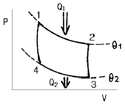
- Q1 - Q2/Q1
- Q2/Q1 - Q2
- Q2/Q1
- Q1/Q2
(정답률: 38%)
3과목: 계측방법
41. 층류와 난류를 판정할 때 레이놀즈수를 사용한다. 난류는 얼마 이상인가?
- 2430
- 2320
- 2220
- 2130
(정답률: 47%)
42. 열전대 온도계에서 주위 온도에 의한 오차를 전기적으로 보상할 때 주로 사용되는 저항선은?
- 서미스터(thermistor)
- 동(Cu) 저항선
- 백금(Pt) 저항선
- 알루미늄(Al) 저항선
(정답률: 14%)
43. 신호전송용 공기압은 몇 ㎏/cm2이 적당한가?
- 0.01 ~ 0.1
- 0.1 ~ 0.2
- 0.2 ~ 0.5
- 0.2 ~ 1.0
(정답률: 40%)
44. 가스의 자기성(磁氣性) 성질을 이용한 분석계는?
- CO2계
- SO2계
- 가스크로마토그래프
- O2계
(정답률: 39%)
45. 단요소식 수위제어에 관한 설명중 옳은 것은?
- 보일러의 수위만을 검출하여 급수량을 조절하는 방식이다.
- 발전용 고압 대용량 보일러의 수위제어에 사용되는 방식이다.
- 수위조절기의 제어동작은 PID동작이다.
- 부하변동에 의한 수위변화 폭이 대단히 적다.
(정답률: 67%)
46. 다음 중 그림과 같은 조작량 변화는?
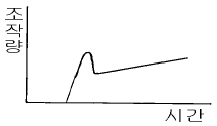
- PI동작
- 2위치동작
- PID동작
- PD동작
(정답률: 65%)
47. 다음 유량계 중 유체압력 손실이 가장 적은 것은?
- 용적식 유량계
- 유속식(Impeller식)유량계
- 전자식 유량계
- 차압식(差壓式) 유량계
(정답률: 67%)
48. 자동제어의 동작순서로 맞는 것은?
- 비교 → 판단 → 조작 → 검출
- 검출 → 비교 → 판단 → 조작
- 조작 → 비교 → 검출 → 판단
- 판단 → 비교 → 검출 → 조작
(정답률: 63%)
49. 다음 기계식 압력계중 정밀도가 가장 좋은 것은?
- U자관형 액주압력계
- 경사관식 액주압력계
- 단관형 액주압력계
- 2액 U자관형 액주압력계
(정답률: 83%)
50. 다음 중 가장 높은 진공도를 측정할 수 있는 계기는?
- Mcleed 진공계
- Pirani 진공계
- 열전대 진공계
- 전리 진공계
(정답률: 24%)
51. 광온도계는 복사온도계에 비하여 다음과 같은 점이 다르다. 이중에서 틀린 것은?
- 정도(精度)가 높다.
- 낮은 온도가 측정된다.
- 자동기록 및 자동제어의 목적에 쓸수 없다.
- 측정거리에 따라 측정치의 영향이 적다.
(정답률: 34%)
52. 다음 중 가스분석 측정법이 아닌 것은?
- 자동올쟈트법
- 적외선흡수법
- 플로우노즐법
- 가스크로마토그래피법
(정답률: 53%)
53. 유속 5m/s의 물 흐름속에 피토관을 흐름에 향하여 세웠을때 그 수주의 높이 h는?
- 1.03m
- 1.28m
- 1.65m
- 1.94m
(정답률: 34%)
54. 다음 온도계중 액체 온도팽창을 이용한 온도계는?
- 저항 온도계
- 색 온도계
- 유리제 온도계
- 광학 온도계
(정답률: 62%)
55. 보일러의 자동제어중 A.C.C란 무엇의 약칭인가?
- 연소제어
- 급수제어
- 증기온도제어
- 유압제어
(정답률: 74%)
56. 보일러를 자동 운전할 경우 송풍기가 작동되지 않으면 연료공급 전자 밸브가 열리지 않는 인터록제어 종류는?
- 송풍기인터록
- 전자벨브인터록
- 프리퍼지인터록
- 불착화인터록
(정답률: 67%)
57. 광고온계를 써서 용융 철의 온도를 측정하는 경우 꼭 주의하여야 할 사항은?
- 거리계수에 주의
- 개인측정 오차에 주의
- CO2 및 H2에 의한 가스흡수의 영향에 주의
- 원격지시에 주의
(정답률: 56%)
58. 수두압이 10m이며 150mm관에 100mm 오리피스를 설치하였을 때 오리피스를 통과하는 유속과 유량은?
- V = 14m/s, Q = 0.109m3/s
- V = 4.5m/s, Q = 6.594m3/s
- V = 14m/s, Q = 1.099m3/s
- V = 4.5m/s, Q = 7.594m3/s
(정답률: 7%)
59. 다음 압력계 중 측정 범위가 가장 넓은 것은?
- U자관 압력계
- 침종식 압력계
- 플로우트식 압력계
- 단관식 압력계
(정답률: 55%)
60. 용적식 유량계의 설명으로 맞지 않는 것은?
- 정도(精度)가 좋다.
- 고점도의 유체측정이 가능하다.
- 맥동에 의한 영향이 없다.
- 압력손실이 없다.
(정답률: 31%)
4과목: 열설비재료 및 관계법규
61. 보온재에 요구되는 성질을 열거한 것으로 틀린 것은?(오류 신고가 접수된 문제입니다. 반드시 정답과 해설을 확인하시기 바랍니다.)
- 가벼울 것, 밀도가 적을 것
- 보온력이 클 것, 열전도율이 적을 것
- 어느 정도 재료가 부드러울 것, 내압력이 있을 것
- 장시간의 사용에 대하여 변질하지 않을 것, 내산, 내열, 내약품성이 있을 것
(정답률: 34%)
62. 단열효과에 대한 설명중 옳지 않은 것은?
- 열확산계수가 작다.
- 열전도계수가 작다.
- 노온이 균일하게 유지된다.
- 열용량이 적어 연소열이 많아진다.
(정답률: 60%)
63. 다음 중 에너지관리공단 이사장에게 권한이 위탁된 업무가 아닌 것은?
- 에너지관리 대상자의 지정
- 검사대상기기의 검사
- 에너지 사용계획의 검토
- 검사대상기기 조종자의 채용.해임 또는 퇴직신고
(정답률: 17%)
64. 효율관리기자재 중 최저 소비효율기준에 미달하거나 최대 사용량 기준을 초과한 것의 생산 또는 판매 금지 명령을 위반한자에 해당하는 벌칙은?
- 2000만원이하의 벌금
- 500만원이하의 벌금
- 1000만원이하의 과태료
- 500만원이하의 과태료
(정답률: 30%)
65. 다음 중 규석벽돌로 쌓은 가마속에서 소성할 때 가장 적당하지 못한 것은?
- 지르코니아 벽돌
- 샤모트질 벽돌
- 납석질 벽돌
- 마그네시아질 벽돌
(정답률: 59%)
66. 다음 중 산성 내화물이 아닌 것은?
- 샤모트질
- 규석질
- 석영질
- 크롬질
(정답률: 47%)
67. 다음 내화물의 특성중 비중과 관계 없는 것은?
- 슬레이킹(Slaking)
- 압축강도
- 기공율(porosity)
- 내화도
(정답률: 46%)
68. 검사대상기기의 위험 또는 위반시 사용정지를 명령할 수 있는 자는?
- 에너지관리공단이사장
- 건설교통부장관
- 시∙도지사
- 행정자치부장관
(정답률: 44%)
69. 열사용기자재의 설치.시공 또는 세관을 업으로 하고자 하는 자는 어디에 등록을 하여야 하는가?
- 행정자치부장관
- 한국열관리시공협회
- 에너지관리공단 이사장
- 시∙도지사
(정답률: 65%)
70. 염기성 내화벽돌의 공통적인 취약성은?
- 스폴링(spalling)
- 슬레이킹(slaking)
- 더스팅(dusting)
- 습윤(濕潤,swelling)
(정답률: 53%)
71. 다음 중 보온재의 구비조건으로 볼 수 없는 것은?
- 열전도율이 작을 것
- 시공이 용이할 것
- 부피 비중이 클 것
- 흡습성이 없을 것
(정답률: 71%)
72. 에너지이용합리화법에 나타난 에너지관리공단의 설립목적은?
- 시∙도의 기능을 대신하기 위해
- 정부의 과대한 업무를 일부 분담키 위해
- 에너지수급 및 동향을 효율적인 방안으로 관리키 위해
- 에너지이용합리화 사업을 효율적으로 추진키 위해
(정답률: 42%)
73. 에너지이용합리화법 상의 효율관리기자재에 속하지 않는 것은?
- 전기냉장고
- T.V
- 조명기기
- 자동차
(정답률: 40%)
74. 반규석질 내화물의 특징은?
- 열에 의한 균열형성율이 작다.
- 열에 의한 치수변동율이 작다.
- 열에 의한 소결성이 좋아진다.
- 열에 의한 기공형성율이 작다.
(정답률: 9%)
75. 급수밸브 및 체크밸브의 크기는, 전열면적 10m2이하의 보일러에서는 관의 호칭 (A)이상의 것이어야 하고, 10m2를 초과하는 보일러는 관의 호칭 (B)이상의 것이어야 한다. 위 괄호 (A), (B)에 알맞는 것은?
- A : 10A, B : 10A
- A : 15A, B : 15A
- A : 15A, B : 20A
- A : 15A, B : 40A
(정답률: 79%)
76. 피열물이 연소가스의 더러움을 받지 않는 가마는?
- 직화식가마(直火式 kiln)
- 반머플가마(半muffle kiln)
- 머플가마(muffle kiln)
- 직접식가마(直接式 kiln)
(정답률: 알수없음)
77. 다음 중 어느 것을 기준으로 단열재, 보온재 및 보냉제를 구분하는가?
- 열전도율
- 내화도
- 안전사용 온도
- 내압강도
(정답률: 62%)
78. 다음 설명중 납석벽돌의 특성이 아닌 것은?
- 비교적 저온에서의 소결이 용이하다.
- 흡수율이 작고 압축강도가 크다.
- 슬래그에 의해서 내식성이 크다.
- 내화도는 SK34이상이다.
(정답률: 56%)
79. 다음 중 용해로가 아닌 것은?
- 고로
- 평로
- 전로
- 수직로
(정답률: 9%)
80. 그림의 배관에서 보온하기전 표면 열전달율 α는 12.3[kcal/m2.℃] 였다. 이를 그래스울 보온통 두께 30mm로 시공하여 방산열량이 28kcal/m.h로 되었다면 보온효율은? (단, 외기온도는 20℃이다.)
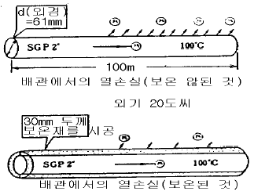
- 44%
- 56%
- 85%
- 93%
(정답률: 23%)
5과목: 열설비설계
81. 연돌의 통풍력에 대한 설명으로 잘못된 것은?
- 연돌이 높을수록 커진다.
- 외부 온도가 낮을수록 커진다.
- 연돌의 단면적이 클수록 커진다.
- 배가스 온도가 낮을수록 커진다.
(정답률: 69%)
82. 증기 트랩으로서 가져야 할 조건이 아닌 것은?
- 압력 유량이 소정내에서 변화하지 않아야 한다.
- 슬립, 율동 부분이 적고 마모, 부식에 견뎌야 한다.
- 동작이 확실하고 내구력이 있어야 한다.
- 마찰 저항이 적고 공기 배기가 좋아야 한다.
(정답률: 63%)
83. 보일러동의 외경이 800mm이고 길이가 2500mm인 랭카셔 보일러의 전열면적은?
- 6.28m2
- 8m2
- 2m2
- 4.8m2
(정답률: 29%)
84. 다음 중 증기보일러 용량을 표시하는 것은?
- 단위시간당 증발량
- 화격자면적 x 본체전열면적
- 단위온도, 단위면적당의 증발량
- 보일러 본체의 접촉전열 면적
(정답률: 34%)
85. 24500㎾의 증기원동소에 사용하고 있는 석탄의 발열량이 7200㎉/㎏이고 이 원동소의 열효율을 23%라 하면 매 시간당 필요한 석탄의 양은?
- 10.5t/h
- 12.7t/h
- 15.3t/h
- 18.2t/h
(정답률: 50%)
86. 다음 중 부식 요인으로서 적절치 못한 것은?
- 이온화 반응
- 전지작용
- 용존가스
- 가성취화
(정답률: 34%)
87. 기포가 보일러 수면에서 파괴될 때 물방울이 날려서 증기와 함께 운반되는 현상을 무엇이라고 하는가?
- 캐리 오버
- 포오밍
- 프라이밍
- 역화
(정답률: 31%)
88. 일반적으로 하천수, 지하수 등을 용수처리하여 보일러 급수에 사용할 때 용수처리 과정으로 적당한 것은?
- 침전 → 제거 → 연화 → 응집 → 여과
- 여과 → 침전 → 응집 → 연화 → 제거
- 응집 → 여과 → 연화 → 침전 → 제거
- 연화 → 응집 → 침전 → 여과 → 제거
(정답률: 34%)
89. 열교환기(Heat exchanger)에서 입구와 출구의 온도차가 △θ′, △θ″일 때 대수 평균온도차 △θ 의 관계식으로 적합한 것은? (단, △θ′> △θ″이다.)
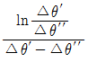
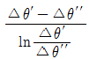
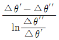
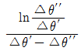
(정답률: 42%)
90. 연소실내의 통풍력이 과대(過大)할 때의 현상을 잘못 설명한 것은?
- 과잉공기량이 많아진다.
- 배기가스에 의한 열손실이 커진다.
- 연소실 내부의 온도가 떨어진다.
- 연소가 불완전하다.
(정답률: 37%)
91. 공냉식 열교환기의 송풍기중 흡입형(induced draft)에 대한 장점을 설명한 것으로 틀린 것은?
- 열풍이 재순환할 염려가 없다.
- 공기의 흐름이 비교적 균일하다.
- 구동축이 짧고 진동이 적다.
- 자연통풍에 의한 냉각효과가 크다.
(정답률: 47%)
92. 다음의 스케일 성분중 연질의 것은?
- 황산염 퇴적물
- 규산염 퇴적물
- 탄산염 퇴적물
- 수산염 퇴적물
(정답률: 27%)
93. 전열면적 16m2인 주철제 보일러의 오버 플로우 파이프의 안지름은 어느 정도 이상으로 정해야 하는가?
- 25mm 이상
- 30mm 이상
- 40mm 이상
- 50mm 이상
(정답률: 23%)
94. 안지름 15㎝, 바깥지름 20㎝인 두꺼운 원통이 견딜수 있는 내압은 몇 ㎏/cm2인가? (단, σt = 4.5[㎏/mm2]이라 한다.)
- 126
- 258
- 86
- 56
(정답률: 20%)
95. 벙커 C유 연소보일러의 연소 배가스온도를 측정한 결과 300℃였다. 여기에 공기예열기를 설치하여 배가스온도를 150℃까지 내리면 연료 절감율은? (단, B/C유의 발열량 9750㎉/㎏, 배가스량 13.6Nm3/㎏, 배가스의 비열 0.33㎉/Nm3℃, 공기예열기의 효율은 0.75로 한다.)
- 4.3%
- 5.2%
- 6.6%
- 7.2%
(정답률: 19%)
96. 다음 약품중 부식방지용에 사용되지 않는 것은?
- 아황산나트륨
- 히드라진
- Morpholme(C4H3ONH)
- 수산화 나트륨
(정답률: 28%)
97. 다음 보일러의 부속장치중 여열장치가 아닌 것은?
- 과열기
- 송풍기
- 재열기
- 절탄기
(정답률: 70%)
98. 아래 조건일 때 절탄기용 주철관의 최소 두께 산출식은?
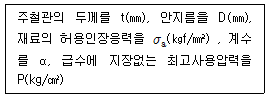
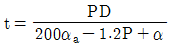
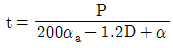
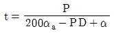
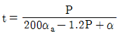
(정답률: 47%)
99. 수관식 보일러에 대한 장점 설명으로 잘못된 것은?
- 보일러 순환이 좋고 효율이 높다.
- 증기 발생의 소요시간이 짧다.
- 스케일의 발생이 적고 청소가 용이하다.
- 관수 순환 방향이 일정하여 순환이 잘 된다.
(정답률: 65%)
100. 안지름이 150㎜, 살두께가 5㎝인 연동제(軟銅製)의 파이프 허용응력이 8㎏/mm2일 때 이 파이프에 몇 ㎏/cm2의 내압을 가할수 있는가? (단, C = 1㎜) (문제 오류로 실제 시험에서는 모두 정답처리 되었습니다. 여기서는 1번을 누르면 정답 처리 됩니다.)
- 14.0
- 19.7
- 31.4
- 42.7
(정답률: 18%)